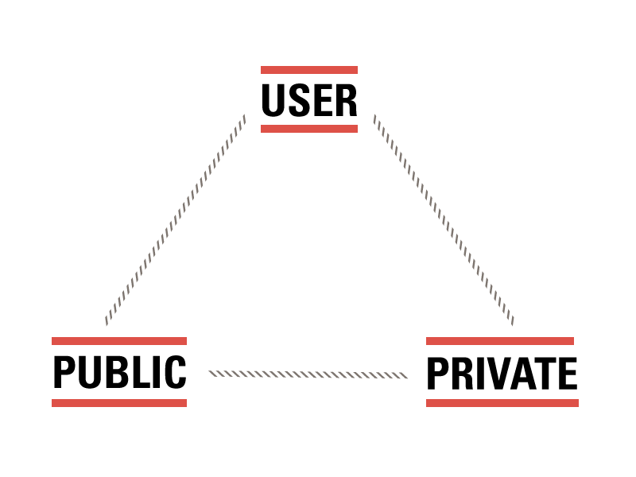
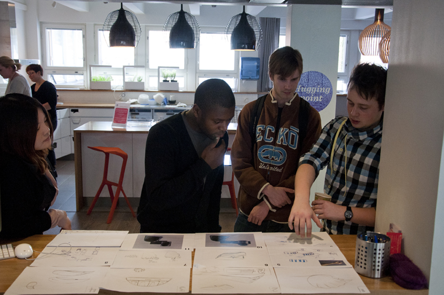

The social effects of pervasive connectivity in Arabianranta
Helsinki, Finland
Say it's Tuesday. You've had a hard day at work and don't feel like joining your friends at the gym. Your Nokia communicator flashes a message that the latest Aki Kaurismäki movie is playing tonight at the local art house — the HVV system knows you might be interested because you went to see Leningrad Cowboys Meet Moses by the same director last week. So you message a friend who might want to go, too. She replies that she's already bought a ticket. With the aid of a seating plan that appears on your communicator screen, you not only book your admission but rebook hers, picking two seats in the middle of a row. The system alerts your friends that you won't be working out tonight and your home heating system that you'll be returning later than usual. Then it adds the fact that you're clearly nuts about Finnish auteurs to its ever-evolving list of your tastes and habits — maybe even notifying you that a movie club has formed in your apartment building. Would you like to join? Meanwhile, you haven't returned the message your mom left you at work; she wants to discuss her plans for Dad's surprise birthday party. Because she lives in Arabianranta and you've allowed her access to some parts of your HVV profile, she can see that you've gone to the movies tonight, sparing you a "Where are you?" scold on your voicemail.
— WIRED magazine, March 2001
A Living Lab
Arabianranta
Active Life Village, Laurea
RFID

Aalto Design Factory
Challenges
- Broad definitions of users, environments, researchers
- Difficulties with long-term testing and feedback
- Very flexible
We learned:
- Finnish
- Hi-tech channels allow for different types of relationships
- Model of living lab still young
- TK TK TK
Looking forward
- Article